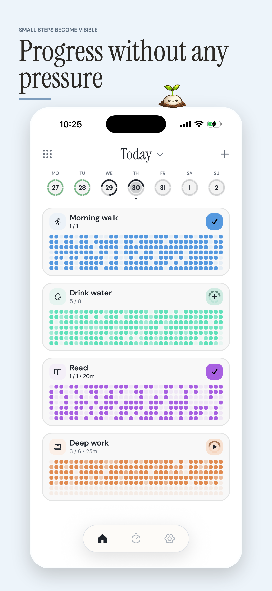
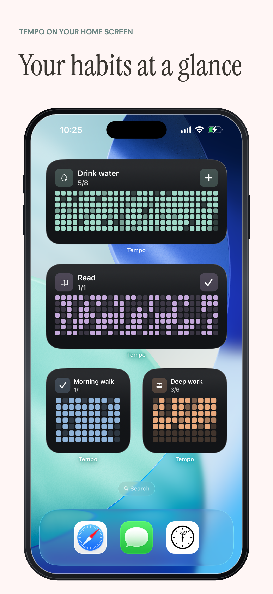
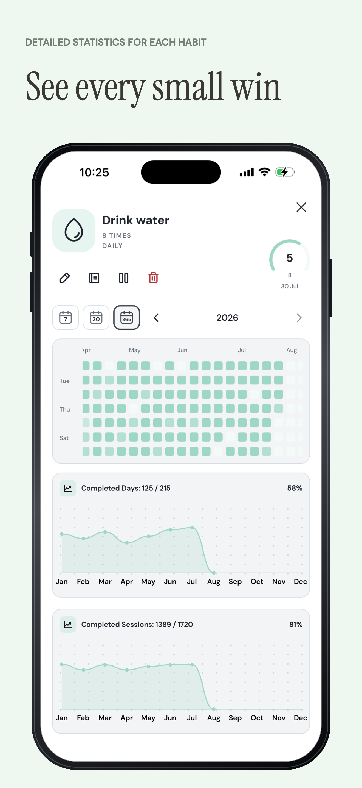
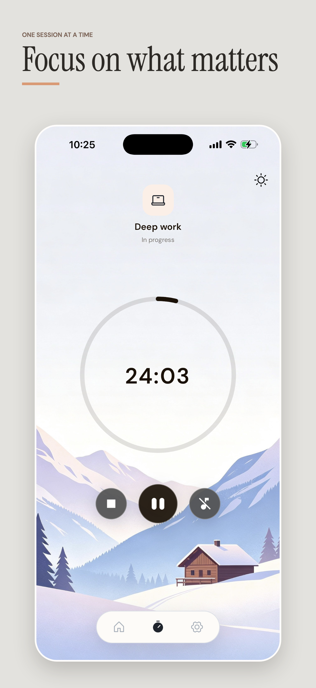
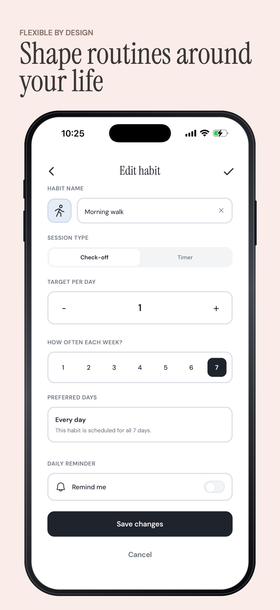
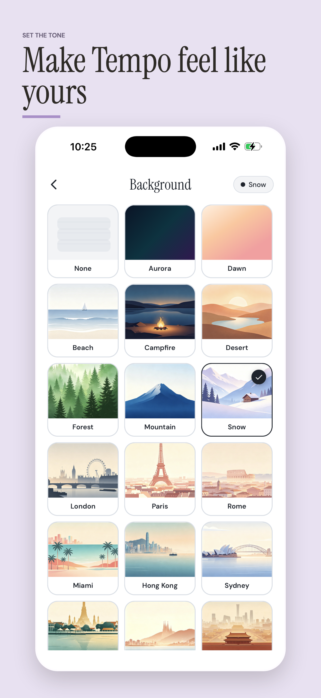

Track Your Habits
Monitor daily progress with visual tile grids, completions, counts, and timed habits.
 Tempo
Tempo
Track habits, focus sessions, reminders, widgets, and progress in one calm daily dashboard. Stay motivated and consistent as you work towards your goals.






Monitor daily progress with visual tile grids, completions, counts, and timed habits.
Keep momentum with streak counts that make consistency easy to spot.
Set notification reminders so important routines are easier to keep up with.
Review past completions and manage previous days without losing context.
Run focused habit sessions with timer controls and session progress.
Check habit progress from iOS widgets without opening the app.
Explore trends, entry breakdowns, completion timing, and habit-by-habit insights.
Build larger habit systems without the free active-habit limit.
Take breaks from a habit without cluttering your dashboard or losing history.
Choose premium themes and background styles that make Tempo feel personal.
Use extra focus sounds for timer sessions and habit routines.
Keep habit data local by default, then back it up and sync across devices with your private iCloud.